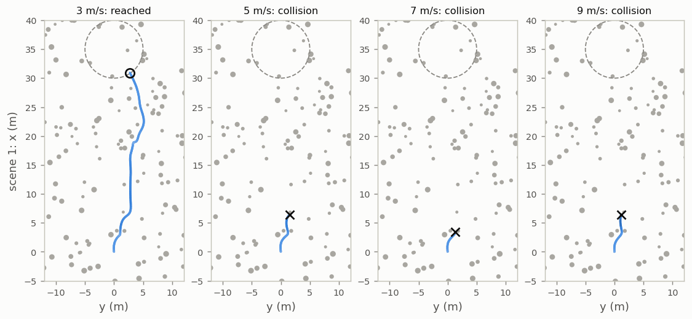
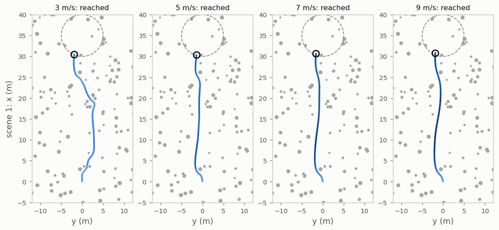
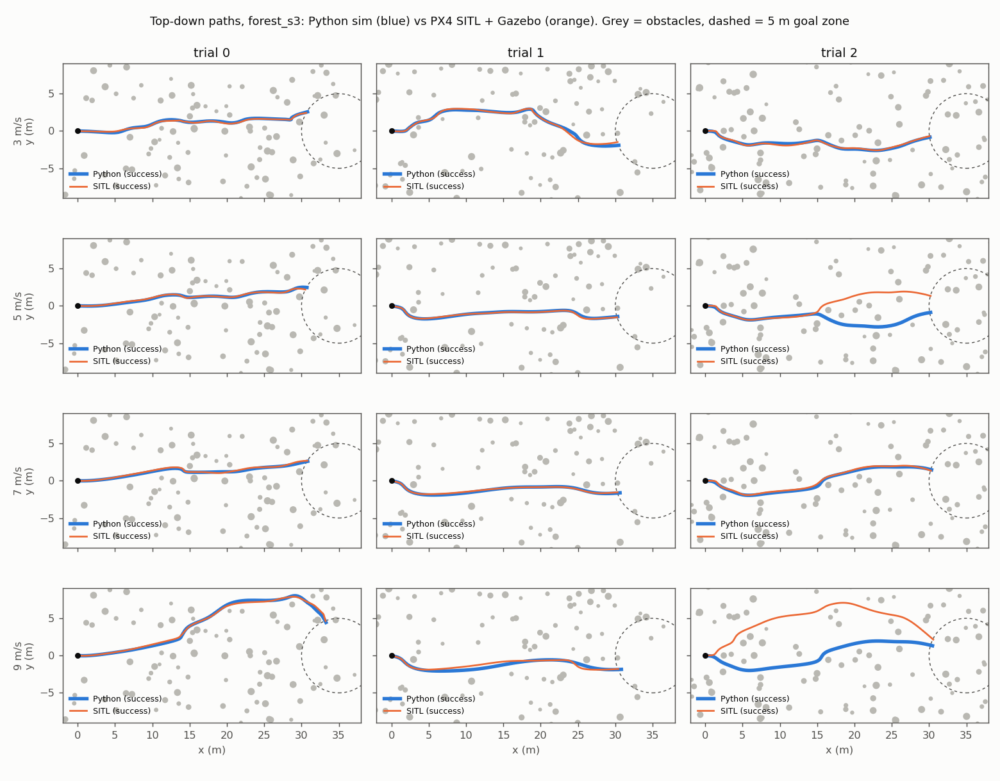
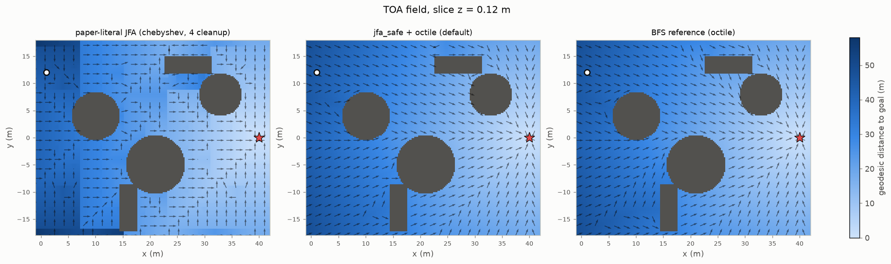

Contents
The policy: depth image in, thrust out
One small network maps a depth image and four state inputs straight to a command, 15 times a second. No map, no planner, no onboard solver.
From network output to motion
- \(\mathbf{f}_{\text{body}}\)network output: commanded acceleration (m/s²), before damping
- \(\mathbf{R}_t\)rotation, body frame → world frame
- \(\mathbf{v}_t,\ \mathbf{g}\)velocity; gravity
- \(\kappa\)random thrust error, drawn per episode
- \(\alpha\)share of last step's acceleration kept (motor lag)
\(\mathbf f_{\text{body}}\) is a commanded acceleration, not a velocity. The \(-\mathbf v\) term is a fixed linear damping, which the paper says matches the closed-loop damping of real flight controllers. With \(\kappa = 1\), \(\mathbf u = \mathbf R\mathbf f_{\text{body}} - \mathbf v\), so the real acceleration is the command minus 1 s⁻¹ × velocity. A constant \(\mathbf f_{\text{body}}\) is therefore not a constant force: \(\mathbf u\) shrinks as the drone speeds up, and the speed settles near \(\mathbf R\mathbf f_{\text{body}}\) (in m/s, because the gain is 1 s⁻¹; motor lag and drag aside). This damping is software feedback in the command mapping. It is separate from the physical drag \(\mathbf a_{\text{drag}}\) in Eq. (2), where the paper randomizes both a quadratic and a linear drag term.
The motor lag rate is 12 s⁻¹, so at 15 Hz:
Training through the simulator
Every simulator step has derivatives. So training can trace a bad flight back to the exact commands that caused it, instead of guessing from noisy scores as reinforcement learning does.
How far back does a loss reach?
Gradient decay keeps 150 backward steps stable. The cost: a loss more than about 3 s after a command barely changes it.
The gradient only describes the simulated model. How well it transfers to a real drone depends on how close the model is (Section 08).
TOA field: reward progress along the route
Picture a wave leaving the goal at 1 m/s, blocked by obstacles. Its arrival time at each point is the length of the shortest free route from there. Training rewards low arrival times.
Try it: straight-line vs. route distance
Lighter = closer to the goal. Arrows point downhill; the orange line follows them. 60 m × 36 m map, 1 m cells. From the default start, straight-line guidance stalls 19.0 m short; the route distance goes around and arrives.
- \(-\nabla\Phi_g\)downhill direction: along the shortest route
- \(\lVert\nabla\Phi_g\rVert = 1\)in open space: 0.2 m downhill lowers Φ by 0.2 m
Build it fast: jump flooding (JFA)
Obstacles change every episode, so the field is rebuilt for all 64 scenes at every training iteration. Spreading distances one cell per round (breadth-first) would take about 240 rounds. Jump flooding takes about 7 per pass.
- Start. The goal voxel holds 0. Every other voxel holds ∞: no value yet.
- Look k cells away. Each voxel checks the 26 voxels exactly k cells away: 6 straight, 12 edge-diagonal, 8 corner-diagonal.
- Keep the best offer. Offer = that voxel's value + the jump length. Keep it if it beats your own value. Occupied voxels stay ∞.
- Halve k, repeat. k = 64, 32, …, 1: 7 rounds on a 128-voxel grid.
Why halving works. The longest jumps throw values across the whole grid; each later round fills the gaps halfway. Every whole number up to 127 is a sum of some of 64, 32, …, 1 (its binary digits), so every voxel can get a value within those 7 rounds:
Try it: jump flooding in 3-D
17 × 17 × 17 voxels, goal in the middle, no obstacles. A jump of k costs kδ straight, 1.41 kδ along an edge diagonal and 1.73 kδ along a corner diagonal (δ = voxel size). Round 1 shows the shape every round uses: the goal's 3 × 3 × 3 neighbourhood, stretched 8 cells apart.
What the cleanup rounds fix. After the halving rounds every voxel has a value, but many run long, because a voxel can only use one jump of each size, in order. Voxel (+8, +4, 0) gets 8 + 4 = 12δ, while 4 diagonal steps and 4 straight ones make 9.66δ. A few extra rounds at k = 1 let neighbours correct each other. In the cube above the average excess falls from 12.8 % to 0.13 % after 3 cleanup rounds.
In code, one round is one pooling call. A 3-D max-pool with kernel 3 and dilation k reads exactly the 27 voxels at offsets −k, 0 and +k on each axis. Negating G turns its max into a min:
- \(G\)distance estimates; goal 0, all else ∞
- \(M = 1\)occupied voxel (obstacles grown by one voxel)
- \(\delta\)voxel size, 0.2 m; at most 128 per axis
- \(k\)jump size in cells: 64, 32, …, 1
Walls. Eq. (4) wipes occupied voxels after each round, so a jump cannot start or end inside a wall. Nothing checks the cells in between, so a long jump can land on the far side of a wall.
Try it: jump flooding around walls
Click a cell to see the 8 jumps it checks in the shown round. Blue lines bring a value, grey ones find none, orange ones pass through a wall.
Ours (jfa_safe) refuses any jump that passes an occupied cell; a diagonal jump is checked as straight
legs along each axis in turn. Refused jumps slow the spread, so it runs the schedule 3 times and then 8 cleanup
rounds: 29 rounds on a 128-voxel grid. It also charges diagonals their real length (1.41 kδ, 1.73 kδ) where Eq. (3)
charges kδ. It is still not exact: a diagonal jump that rounds a wall end is checked along its legs but charged the
shorter diagonal, so cells behind it come out a little short (up to 12 % on this map). Section 09
has the error numbers and timings.
Not the textbook jump flooding
In graphics, jump flooding passes along each pixel's nearest seed point and measures the straight-line distance to it, so it ignores walls. Here each voxel passes along a route length, which adds up jump by jump and can bend around obstacles. The price is the long-running values that the cleanup rounds fix.
Turn the field into a training gradient
The field is a lookup table, so it has no derivative of its own. The paper uses the stored slope as the gradient:
.detach()): same value, but treated as a constant. Since \(\mathbf p - \bar{\mathbf p} = 0\),
the forward value is the table lookup; the backward derivative is the stored slope. This is a straight-through gradient.\(\mathbb E\) averages over steps and scenes. BPTT turns "move this position downhill" into changes to earlier commands.
Why reward positions instead of a TOA velocity target?
Lee et al. (ICRA 2026) aimed velocity along \(-\nabla\Phi\). That target stops correcting once the velocity points the right way, and it competes with the CBF on velocity. Rewarding positions keeps rewarding real progress, and leaves velocity to the CBF.
Velocity-aligned yaw: look where you go
The camera faces forward. If the nose stays on the goal while the drone sidesteps an obstacle, the camera misses the space the drone is flying into.
The paper's "TOA" setting adds the TOA loss and this yaw rule together, so its gain covers both. TOA's detours are exactly the flights that would enter a blind spot with a goal-facing nose.
CBF loss: slow down before it is too late
Cap the speed toward the nearest obstacle at gain × clearance. The closer the obstacle, the lower the cap. Sliding past sideways is free.
\(k\) is the CBF gain: larger allows a faster approach. The rule says how fast clearance may shrink, since \(\dot h = -\mathbf v\cdot\hat{\mathbf n}\).
As a training penalty
The paper does not enforce the rule in flight (that would need a solver, a CBF-QP). It penalizes violations in training:
- \(\beta\)sharpness; larger is closer to a hard limit
- \(d_{\text{act}}\)only points with \(h < d_{\text{act}}\) are averaged
- \(M\)points checked ahead along the motion (10 here)
- \(h,\ \hat{\mathbf n}\)held constant: the gradient flows through velocity only
Try it: the CBF penalty
At the start values: 4 m/s against a 2.5 m/s cap costs softplus(2 × 1.5) ≈ 3.05; 1 m/s costs ≈ 0.05. The paper does not report k, β or dact; these are this repo's defaults.
The collision penalty still guards contact
\(\mathcal O\): all obstacles. \((\cdot)^+\) keeps positive values. The two penalties work at very different ranges:
The full training loss
Six weighted terms: progress, safety and smooth commands. Collision and CBF weigh most.
- \(L_v\): SmoothL1 between mean and target velocity. It is the original straight-line goal reward; \(L_{\text{toa}}\) corrects it near dead ends.
- In \(L_{\text{jerk}}\), \(f\) = 15 Hz, so a 1 m/s² change per step counts as 15 m/s³.
- The authors found \(\lambda_{\text{toa}}\) barely mattered over their range. \(\lambda_{\text{cbf}}\) trades safety for agility.
Results reported in the paper
TOA + CBF did best in simulation, most clearly at 9 m/s. On the real F250, 18 of 20 forest flights succeeded and none touched a tree.
Ablation: add one idea at a time (Table II)
Distance = straight-line guidance, fixed yaw. TOA adds the TOA loss and velocity-aligned yaw. TOA + CBF adds the CBF loss.
Table II with mean speeds
| Success · mean speed (m/s) | 3 m/s | 5 m/s | 7 m/s | 9 m/s |
|---|---|---|---|---|
| Distance | 72.5 % · 2.98 | 85 % · 4.66 | 67.5 % · 6.37 | 57.5 % · 8.02 |
| TOA | 90 % · 3.23 | 90 % · 5.17 | 80 % · 7.15 | 75 % · 8.58 |
| TOA + CBF | 87.5 % · 3.43 | 87.5 % · 5.21 | 85 % · 6.98 | 90 % · 8.77 |
| p, TOA + CBF vs Distance | 0.16 | 1.00 | 0.11 | 0.002 |
Benchmark against other methods (Table III)
80 trials per cell: a forest with 3 m tree spacing plus large spheres, cylinders and boxes. EGO-Planner maps then optimizes a path; Agile imitates an expert; DiffPhys is the baseline with its official settings.
Table III
| Success rate | 3 m/s | 5 m/s | 7 m/s | 9 m/s |
|---|---|---|---|---|
| EGO-Planner | 51.25 % | 27.5 % | 11.25 % | 5 % |
| Agile | 48.75 % | 32.5 % | 16.25 % | 2.5 % |
| DiffPhys | 62.5 % | 53.75 % | 52.5 % | 41.25 % |
| TOA + CBF | 67.5 % | 63.75 % | 65 % | 58.75 % |
| p, TOA + CBF vs DiffPhys | 0.62 | 0.26 | 0.15 | 0.040 |
Real flights on the F250
The simulation-trained policy flew the authors' 250 mm quadrotor with no extra training: five flights per target speed through a ~50 m forest corridor.
Our drone (charpi) and local results
Trained on our drone's own model, the policy reached 95–100 % success flying that model in simulation. Our point-mass benchmark did not reproduce the paper's lead.
No policy from this repo has flown on the physical drone yet. "charpi" below means its model, calibrated from flight logs.
charpi responds about 2.4× slower than the point mass
charpi takes collective thrust and body rates (CTBR), with command delays, rate limits and thrust limits. A first-order lag fitted to its acceleration gives 5 s⁻¹, against the point mass's 12 s⁻¹.
Point mass vs. charpi plant, side by side
| Point mass, Eq. (2) | charpi plant | |
|---|---|---|
| Input | world acceleration u, 15 Hz | throttle η 0.15–0.8 and roll / pitch / yaw rates ≤ 4.0 / 2.5 / 3.0 rad/s, every 10 ms |
| Delays | first-order lag | 20 ms command delay; slew limit 110 / 50 / 25 rad/s²; 30 ms motor lag |
| Attitude | instant; heading filtered at 6 s⁻¹ | 2nd-order rate loop per axis, ωₙ 62.9 / 67.4 / 40 rad/s, fitted to real CTBR logs |
| Thrust | no limit | 47.3 η² + 9.31 N = 10.4–39.6 N (0.83–3.15 g at 1.279 kg) |
| Randomized | lag, drag, κ, wind, gravity disturbance | thrust scale 0.85–1.2, ωₙ, damping, motor lag; plus wind and gravity disturbance |
Other lag fits: narrow randomization band 5 s⁻¹; PX4-SITL body-rate fit 4 s⁻¹; commands twice as aggressive 3.5 s⁻¹ (scripts/charpi/fit_charpi_surrogate.py).
Two models per step: one flies, one gives the gradient
The same straight-through trick as Eq. (5), now between two models: value from the plant, derivative from the surrogate \(\hat{\mathbf x}\).
The 100 Hz controller: acceleration to thrust and body rates
- Thrust direction. \(\mathbf f = \mathbf u + (0, 0, 9.81)\), tilt ≤ 60°. \(\mathbf u = 0\) is hover.
- Body rates. PX4's attitude law (tilt before yaw), MC_ROLL_P = MC_PITCH_P = 6.5, MC_YAW_P = 2.8.
- Collective thrust. Push along the body's up axis, never less than what holds height.
- Throttle η. From the nominal thrust curve; the controller does not know the randomized scale.
Policy steps last 7, 6, 7, … ticks, since 15 Hz does not divide 100 Hz. Each command still takes effect one policy step (66.7 ms) after it is computed.
The nose trails the heading setpoint by about 1 / MC_YAW_P ≈ 0.36 s.
Braking downward is weak
feasible_accel clips commands to this range, so training gets no gradient for pushing on a command the plant ignores.Training on charpi raises success on charpi
Same policy recipe, two training models, both flown on simulated charpi: forest with 3 m spacing, 40 trials per bar, nominal dynamics, one training seed.


Our point-mass benchmark did not reproduce the paper's lead
Same policy in PX4 SITL + Gazebo
SITL runs the real PX4 flight software against a simulated drone, through the same deployment path as our real drone. Each SITL trial pairs with the Python trial of the same seed.

| 10 trials per speed, Python / SITL | 3 m/s | 5 m/s | 7 m/s | 9 m/s | mean speed |
|---|---|---|---|---|---|
| Forest, 3 m spacing | 100 / 100 % | 100 / 100 % | 100 / 100 % | 100 / 100 % | 4.05 / 3.93 |
| Large obstacles | 90 / 90 % | 100 / 100 % | 100 / 100 % | 90 / 100 % | 4.33 / 4.17 |
A second simulator, not a flight test. Still to do: onboard integration, hardware timing checks, real flights.
Where the paper is unclear, and what we chose
The printed TOA update undercharges diagonal steps and can jump through thin walls. Our default fixes both.

The accurate field costs most of each iteration
Constants the paper leaves out
| Constant | Paper | This repo (train.py) |
|---|---|---|
| CBF gain k | not reported | 2.5 s⁻¹ |
| Sharpness β | not reported | 2.0 |
| Active cutoff dact | not reported | 1.5 m |
| Points checked M | not reported | 10 (DiffPhysDrone) |
| Collision sharpness α | not reported | 32 m⁻¹ |
| dsafe = clearance setting m? | implied, not stated | yes |
Also unreported: the velocity averaging window, the training speed range and scene sizes.
The ground counts as an obstacle, so the CBF is nearly always active
Ours puts a ground plane at z = −1 m, with training starts 0.4–1.5 m above it. With dact = 1.5 m every checked point
is then inside the cutoff (69 % without the ground); logged cbf_active ≈ 0.87. So the CBF also caps descent speed near the
ground at k·h: 2.5 m/s at 1 m clearance. The code was not changed for this.
How strong is the evidence?
Limited, as the paper says. With 40–80 trials per cell, even 10-point gains are inconclusive; against DiffPhys only 9 m/s is significant. Real flights: five per speed.
Why the paper's two tables disagree
Different scenes: Table II uses forests of unstated density; Table III pools a 3 m forest with large obstacles. So at 3 m/s TOA + CBF scores 87.5 % in one and 67.5 % in the other. Training also uses exact ray-cast depth plus noise, while evaluation uses stereo depth, so the tests also cover a sensor change.
Terms
- Ablation
- Adding one idea at a time to measure each one (Table II).
- BPTT
- Back-propagation through time: gradients computed backward through every step of a flight.
- CBF
- Control barrier function: positive inside the safe set. Here, a training penalty on closing speed above k·h.
- CBF-QP
- The usual run-time use: an optimizer that edits each command as little as possible to stay safe.
- charpi
- Our drone's simulated model, calibrated from its flight logs, ported from qpg-quad-jax.
- CTBR
- Collective thrust and body rates: total thrust plus roll, pitch and yaw rate setpoints.
- DiffPhys
- The baseline method (Zhang et al., 2025). DiffPhysDrone is its code and simulator.
- Domain randomization
- Varying model parameters between episodes so the policy tolerates model error.
- Fisher exact test
- Exact test for a difference between two success rates; suits small samples.
- Geodesic distance
- Length of the shortest route that avoids obstacles.
- JFA
- Jump flooding algorithm: each voxel takes the best value offered by voxels k cells away, with k halving every round (64, 32, …, 1).
- Plant / surrogate
- Plant: charpi's detailed model, which flies the state. Surrogate: the point mass that supplies the gradient.
- Point mass
- The paper's simple vehicle model, Eq. (2): no flight controller, no motors.
- Rollout
- One simulated flight: 150 steps (10 s at 15 Hz) for 64 scenes at once.
- SITL
- Software-in-the-loop: real PX4 flight software flying a simulated drone.
- Softplus
- log(1 + eˣ): ≈ 0 for negative x, ≈ x for large x.
- Stop-gradient sg(·)
- Keep a value but treat it as a constant for gradients (
.detach()). - Straight-through
- Forward pass uses one value, backward pass the derivative of another.
- Success rate
- Share of trials that end within 5 m of the goal with no collision or time-out.
- TOA field
- Time-of-arrival field: each voxel's shortest free route length to the goal.
- VIO
- Visual-inertial odometry: position and attitude from cameras plus an IMU.
- Voxel
- Cube-shaped grid cell, 0.2 m in the paper.